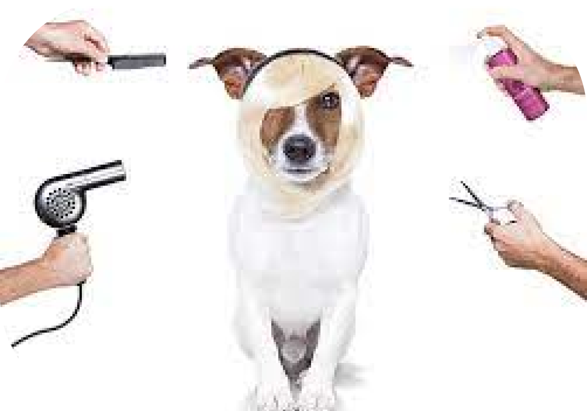

.png)
SOBRE NOSOTROS
Técnica como auxiliar en medicina veterinaria con certificación en peluquería canina y felina, con conocimiento en: aplicar tratamientos antiparasitarios, limpieza de oidos, asesoría sobre su pelaje y posibles alergias, corte de pelo y uñas, logrando que esten en buenas condiciones. También puedo proporcionarles servicios domicilio y accesibilidad acompañamiento hasta su hogar.


Certificación en auxiliar veterinaria
Certificación en estetica canina y felina
Certificación en estetica canina y felina
MISIÓN: La misión de PetLizz nace de nuestro amor por los animales y las ganas de que nuestras mascotas tengan productos de máxima calidad para el cuidado de su piel y pelaje. Esto nos motivó a estudiar y desarrollar los productos con materias primas de primera calidad y de origen natural Todos nuestros productos son de excelente calidad.
VISIÓN: Nuestra visión como empresa es siempre ir innovando en nuestros procesos productivos,Para el 2025 tendremos presencia en todo el valle de aburrá. También nos enfocamos en aportar al cuidado del medio ambiente. Esto lo hacemos a través de la tecnologización de los procesos,con una producción responsable a menor escala,la cual genera menos desechos en toda su linea productiva.
VALORES: Que destacan a PetLizz es el compromiso con la calidad de cada producto,todos lo que hacemos es libre de crueldad animal,enfocado a la tenencia responsable, educando a la gente de como bañar a su mascota y hacerlo con productos specialmente desarrolados para ellos. Buscamos reafirmar el vinculo que existe entre la mascota y su dueño mediante un rico baño y mucho amor.

PRODUCTOS Y PROMOCIONES
Placas identificación debidamente marcada, y te obsequiamos la correa para portarla.
Despues de su corte y baño, le podemos colocar como accesorio pañoleta, moño, sticker
de flores, o lo que desee el propietario de la mascota, ya sea macho o hembra.
Tenemos productos en cosmetología con su respectiva asesoría.